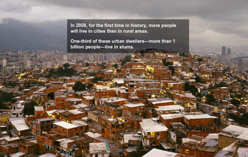

Tue, 07 Dec 2010 08:06:17 · Magnum · Photographers · Slums · Cities · Photo
Photo Feature: Slums Around the World

The Place We Live, is an incredibly touching interactive photo feature by Magnum Photographer, Jonas Bendiksen, showcasing slums around the world. His journey will take you into far-flung slums in Caracas, Venezuela, to Kibera in Nairobi [Kenya], all the way to Dharavi in Mumbai [India], and Jakarta, Indonesia.
These captivating documentary definitely offers a different perspective on what an economic crisis really mean.